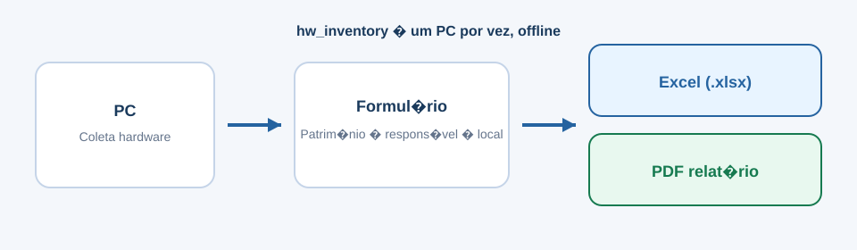

🎯 O que ela resolve
📦 A situação comum
É preciso registrar patrimônio e composição técnica de PCs (tombamento, responsável, local, séries das peças) sem planilha manual demorada.
✨ Com o hw_inventory
Abra o programa no próprio PC, preencha os dados do bem, aguarde a coleta
e recolha Excel + PDF em Área de Trabalho\Inventario_Patrimonial.
🧰 Como funciona
- 🖥️ Modo Individual (padrão) Offline Não depende de Active Directory nem de rede. Após Concluído, o programa encerra.
- 🏛️ Modo Active Directory Opcional Só libera com domínio + grupo Administrador do domínio. A coleta continua sendo neste PC (não varre a rede).
- 📋 Fluxos de patrimônio Com ou sem número Com número oficial (recomendado) ou sem número (com confirmação e alerta no relatório).
👁️ Como fica na prática
Fluxo resumido: abrir como administrador → escolher o modo → preencher o formulário → gerar inventário → recolher Excel e PDF.

📊 Esquema ilustrativo — o detalhe passo a passo está no manual do repositório.
▶️ Como começar (Windows)
1. Baixe hw-inventory.exe no repositório (pasta dist/)
2. No PC a inventariar: botão direito → Executar como administrador
3. Escolha Modo Individual (ou AD, se autorizado)
4. Preencha patrimônio (se houver), responsável e local
5. Clique em Gerar inventario e aguarde
6. Arquivos em: Área de Trabalho\Inventario_Patrimonial\
Manual ilustrado: dist/MANUAL_UTILIZACAO.pdf no repositório.
Linux/macOS usam binário próprio (não o .exe).
📚 Documentação e download
Pacote público no GitHub (executável + manual): github.com/AndressaLF/hw_inventory
👥 Para quem é
- 🏛️ Patrimônio / administração — registrar bens de informática com evidência
- 🖥️ TI e suporte — documentar configuração e séries sem planilha manual
- 🔬 Unidades de pesquisa e laboratórios — inventário periódico de estações de trabalho